Capítulo 2
Los sublimes espectáculos
«Espectador de los sublimes espectáculos…»1
F. Tiútchev
El macedonio soñó con la creación de un poderoso imperio occidental-oriental. Roma, en cambio, es el modelo ideal, el prototipo de la estatalidad moderna, con su ejército regular, su jurisprudencia, todas las delicias de las grandes ciudades, con sus «ínsulas», casas de vecindad de alquiler de múltiples viviendas.
Desaparecidas en su debido plazo como Estados vivos, ambas entraron en la genética cultural de los siglos venideros. Es difícil imaginar cuántas veces, en cada caso, invocamos, utilizamos, nos inspiramos en la Antigüedad. Un filósofo contemporáneo dijo: «Toda la historia de la filosofía moderna no es más que un comentario a Platón»2. He ahí la palabra correctamente hallada: comentario. Y así titulamos este libro: «Comentario a la Antigüedad».
¿Cuándo y cómo surgió la Hélade? ¿Cuándo se formó su primigeniedad, su sangre? «Los mitos de la Antigua Grecia»: la mitología de la Antigüedad que conocemos desde la infancia y que aceptamos como leyenda y como hecho histórico.
El historiador griego Apolodoro de Alejandría3 comienza su obra «Biblioteca mitológica» con la descripción de las cuatro generaciones de la formación del mundo, del Caos al Logos, y ello recuerda a la vez el principio del Libro del Génesis y los modelos científicos modernos sobre el origen de la vida en la Tierra.
«Urano fue el primero en gobernar el mundo entero. Uniéndose en matrimonio con Gea, engendró ante todo a los llamados hecatonquiros…» (Apolodoro, «Biblioteca mitológica», Leningrado: Nauka, 1972, p. 5). Eran terribles monstruos ctónicos, de muchos brazos y muchas cabezas, de fuerza desmesurada. Tras ellos aparecieron los cíclopes de un solo ojo, pero también ellos desaparecieron, envueltos en tinieblas. Luego Urano y Gea dieron a luz a los titanes y a las titánides.
escribió el poeta francés Charles Baudelaire.4
Finalmente apareció en escena Crono. Alzándose con sus hermanos los titanes contra su padre Urano, le cortó el miembro viril y lo arrojó al océano. Entonces nacieron las erinias.5 Crono, casado con Rea, engendró el linaje de Zeus. La cosmogonía no señala cronología ni tiempo. El delirio caótico-ctónico es del no-ser, eterno y atemporal. Agotándose a sí mismos, los monstruos ctónicos eran precipitados al «Tártaro», la oscura sima de lo inmedible. Hecatonquiros, cíclopes, quimeras, centauros: seres ctónicos, no desgajados aún de lo antropomorfo, de lo zoo- y biomorfo. Sin detenernos en los procesos de la lucha bioevolutiva de las fuerzas cósmicas, quisiéramos recordar la imaginería del mito. Por ejemplo, la del Caos que devora a sus hijos. Francisco Goya, en el cuadro «Urano devorando a sus hijos»6, reveló el contenido contemporáneo, claro para nosotros, de este mito. Con anchas pinceladas, de modo convencional, pinta el artista algo que pierde semejanza y vínculo con lo humanoide. La locura de la destrucción.
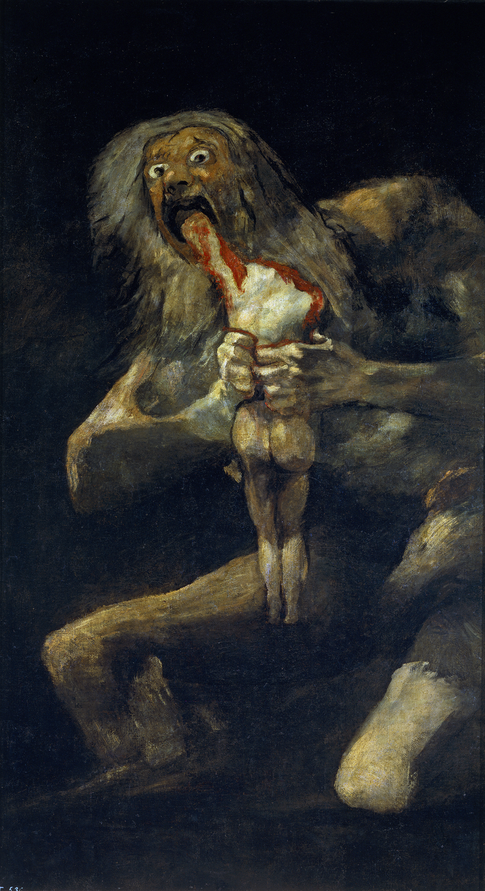
El mito es eternamente vigente precisamente porque reproduce valores humanos universales de dolor y alegría, nociones a menudo polares, incluidas las edificantes y pedagógicas. Para que el mito se una a la historia, debe repetirse realmente muchas veces en el tiempo. El Caos devora a los hijos. O bien: cuando el tiempo de las guerras y los cataclismos devora a sus hijos, sabe que ha llegado el caos. Cuán exactamente lo mostró Picasso en el cuadro «Guernica». La Madre Tierra, Rea, daba a devorar a Crono sus hijos hasta que aprendió a esconderlos.
A Poseidón, por ejemplo, lo escondió en el océano universal.7 Y en lugar de Zeus le dio al papá que se tragara una piedra envuelta en pañales. Rea partió hacia Creta, donde en la cueva del monte Dicte (cualquier turista puede hoy visitar en Creta la cueva de Dicte) dio a luz a Zeus, entregándolo para su crianza a las ninfas Adrastea e Ida. Las ninfas lo criaban y le daban la leche de Amaltea (la cabra) desde su «cuerno de la abundancia». De la lana de Amaltea se hilaban los finos hilos del camino y del conocimiento. El ovillo de Ariadna era también de lana de la cabra maravillosa.8
Recordemos el nacimiento y la infancia de Zeus. Aquí está el inicio mitológico de todos los inicios. Aquí el mito se viste de historia. En el arte figurativo, el tema de la infancia del dios de los dioses está prácticamente ausente. Solo en un bajorrelieve helenístico alejandrino del siglo II a. C. aparece un bebito regordete al que desde el «cuerno de la abundancia» alimenta una elegante joven dama. Bucólica apacible y serena al estilo de la escuela alejandrina. La molicie del relieve alejandrino era imagen del siglo II a. C., no del real tiempo inmemorial.
En Creta ocurrió con Zeus una historia asombrosa. Mientras las ninfas-nodrizas lo trasladaban de un lugar a otro, perdió su ombligo. Zeus perdió su ombligo en Creta. La imaginería de los temas de cualquier mito es polisémica. Precisamente en Creta se produce la ruptura de generaciones y de tiempos. Como si comenzara una historia nueva, otra. Y en efecto, más adelante Zeus, alzando a sus hermanos y hermanas, consuma una cierta revolución cósmica, despiadada con los antepasados faltos de memoria, en nombre de la afirmación de aquel orden del mundo, de aquellas representaciones que hasta hoy, en nuestra conciencia cultural, son el fundamento de toda la ideología antigua.
Estamos resumiendo los mitos griegos vinculados a Creta. Estas historias no quedan confirmadas por los temas figurativos de la propia Creta. De ningún Zeus ellos supieron. Son relatos tardíos: la mitología griega que computa el tiempo de Zeus desde Creta.
La mitología llama a la isla de Creta el lugar del fin y del comienzo de la ruptura. «Gigantomaquia» se llama así el acto, el misterio de la lucha contra los titanes9: el tema más popular de Grecia. Un aliento grandioso, patético-trágico, adquiere en los altorrelieves del célebre Altar de Pérgamo, cuyo original se conserva en Berlín. La Gigantomaquia del Altar de Pérgamo es ya un comentario al mito, distante del nacimiento del mito por una infinidad de camino. Puede considerarse que, por ejemplo, el artista del siglo XIX Goya y los autores del altar están igualmente alejados del tiempo del acontecimiento. Una cinta de 120 metros, en montaje compositivo, se despliega ante nosotros como una epopeya escultórica. Los eruditos afirman que los reyes de la despotia helenística de Asia Menor, Pérgamo —Atalo y Eumenes II—, erigieron el altar y ofrecieron en él sacrificios, glorificando a los dioses vencedores. Al mismo tiempo, el texto mitológico ilustraba también la propia victoria sobre los bárbaros galos.
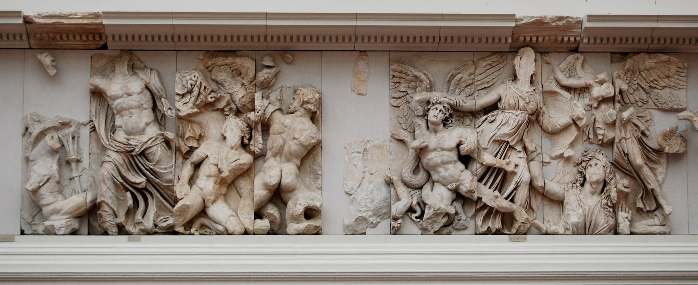
Esta grandiosa epopeya escultórica está llena de expresión tanto en la imagen del triunfo de los vencedores como en la de su despiadada crueldad. Pero asimismo de compasión hacia los vencidos. El Altar de Pérgamo, cuyo tema se remonta a los orígenes cosmogónicos, comenta los acontecimientos políticos de la formación del Estado de Pérgamo, equiparando los episodios de la derrota gala con la historia antigua del comienzo de los comienzos, con un patetismo genuinamente wagneriano.
Volvamos, sin embargo, al momento del nacimiento de Zeus en Creta. El mito más antiguo señala la cueva como lugar sagrado del nacimiento de lo nuevo: de una nueva era. La cueva es, quizás, la metáfora más antigua, transversal a toda la memoria humana. Precisamente en las cuevas de los Pirineos encontramos las primeras (según se suele aceptar) imágenes de animales. Conocemos los templos rupestres del Antiguo Egipto y las cuevas donde alcanzan la eternidad en contemplación los ascetas «altamente sabios» del budismo, y las cuevas, santuarios de judíos y musulmanes con el polvo del patriarca Abraham. La cueva del nacimiento-muerte es un capítulo aparte, tema de investigación. La cueva es parte del monte, del macizo montañoso. Hay cuevas subterráneas, es decir, que conducen a otro mundo bajo tierra. Hay cuevas en el monte, donde en eterna contemplación aguardan las campanas los sabios, o donde, ardiendo, renace de su propia ceniza el ave fénix. La «cueva» es en la mitología, además, una de las imágenes de la montaña del mundo. El eje del mundo que une la tierra y el cielo. Si recordamos que Zeus precisamente allí perdió su ombligo, entonces la cueva de Dicte es a la vez montaña y eje del mundo. Y el nacimiento precisamente en ese punto divide siempre el mundo en «antes» y «después». El nacimiento de Zeus es la línea axial que separó la conciencia del cronos (la historia) del caos, es decir, la principal divisoria de aguas del mundo. El tiempo queda separado del sin-tiempo. No podemos construir la cadena cronológica y saber cuál de las cuevas fue la primera. Quizá la primera cueva y la principal fue, es y sigue siendo el vientre materno: el lugar del todo-nacimiento. Y el hombre, la montaña entre el cielo y la tierra. El niño Cristo nació en la cueva de Belén, adonde llegaron en tiempos del empadronamiento María con su esposo José. No hubo lugar en las posadas, hubo que guarecerse en el establo-pesebre rupestre. Es el misterio, el sacramento del Nacimiento de Cristo, que dividió toda la historia en el «antes» y el «después» de la era nueva.
Y dio a luz a su Hijo primogénito,
y lo envolvió en pañales,
y lo recostó en un pesebre, porque no
tenían lugar en la posada.
Evangelio de Lucas, 2:7
En su momento volveremos a la Navidad y hablaremos de la interpretación de este tema por el arte universal. Aquí nos interesa el lugar del nacimiento: la cueva.
Atenta, sin parpadear, a través de escasas nubes,
sobre el niño echado en el pesebre, desde lejos,
desde la profundidad del Universo, desde su otro confín,
una estrella miraba hacia la cueva.
Y era la mirada del Padre.
I. Brodski. Cartas a un amigo romano. San Petersburgo, 2001, p. 24a
Qué estrella miraba hacia la cueva del niño Zeus, y si el cielo estaba siquiera estrellado, no lo sabemos.
Zeus regresa de nuevo a Creta, ya convertido en Toro, con su frágil carga: la princesa fenicia Europa sobre el lomo, hija del rey Agénor de Sidón.
Creta, en la mitología antigua como en la historia en general, es lugar viejo: lugar nuevo. Todo el siglo XIX, obsesionado con el clasicismo, con Homero, la mitología, los trajes y el teatro de la Antigüedad, se convirtió en el gran siglo de la arqueología antigua. A Heinrich Schliemann, que creía en cada palabra de Homero, se le tiene por el arqueólogo que descubrió Troya y la cultura minoico-aquea. Pero ¿es esta Troya, o bien, en el fervor de las excavaciones, «se pasó de largo por Troya» y puso al descubierto un estrato aún más temprano? Ya Schliemann vivía con el gusano de la duda en el alma. Pero hace tiempo que hemos convenido en que la máscara de oro de Agamenón del Museo de Atenas, las joyas de oro, creadas no se sabe por quién ni cómo, la cerámica, los yelmos: he ahí el estrato micénico-minoico.
En 1900, justo en el umbral de dos siglos, murió el último gran filósofo clásico de Alemania, Friedrich Nietzsche. Se ocupó mucho de la Antigüedad. Escribió la obra «Sobre el origen de la tragedia griega».10 Devolvió al siglo XX el tema de Apolo y Dioniso: el de la conciencia constructiva y el de la artístico-intuitiva. ¿Y quién vence a quién en el hombre: Dioniso a Apolo, o Apolo a Dioniso? ¿La alta razón o los abismos de la pasión? En ese mismo año 1900 el arqueólogo inglés Arthur Evans nos abrió otra civilización «pre-griega» en la isla de Creta, al descubrir las ciudades-laberinto. Estas confirman el mito del rey Minos, para quien el arquitecto Dédalo construyó el laberinto de cuevas. Dédalo inventó también algo semejante a la primera máquina voladora: alas para sí y para su hijo, a fin de huir de Minos. Cómo terminó ese primer vuelo del hombre sobre el mar para su hijo Ícaro, lo sabemos. Pero Dédalo sí logró huir de Minos, y vivió sus días hasta el fin en Atenas.11
La osadía y la rebeldía, la lucha de las pasiones altas y bajas, la tragedia de los finales fueron propuestas a la reflexión mucho antes de que nacieran el teatro y la dramaturgia trágica.
Los laberintos de Creta: prodigio del pensamiento, de la técnica constructiva, de la arquitectura. El laberinto no tiene análogos ni en el mundo antiguo ni en otra arquitectura europea. Pero dicen que en el Antiguo Egipto se construyó una edificación semejante junto a Tebas, para el faraón Memnón (Amenhotep III), padre de Amenhotep IV.12 El laberinto fue con el tiempo destruido y olvidado, pero existe como cierto prototipo, el negativo del cretense. ¿Cuándo fue construido el laberinto? ¿Con qué fines? Eso no lo sabemos. Situado en una superficie de 22 000 metros cuadrados, en varios niveles, rupestre, subterráneo y a la vez elevado, pintado de maravillosos frescos, azuza nuestra imaginación. Parte de las columnas conservadas que sostienen el pórtico exterior está pintada de rojo y como puesta del revés, es decir, se estrecha hacia abajo. Los materiales empleados en la construcción son los más variados: artificiales (una especie de yeso) y naturales: piedra, madera y hasta ladrillo. El nivel de la técnica constructiva es increíble, inexplicable. ¿Y cuántos años se estuvo construyendo? Hay testimonios de que los aqueos, al invadir Creta en el siglo XII a. C.13, incendiaron lo que pudieron. Pero para entonces ya no había quien pudiera resistir a los aqueos. Puede suponerse que Creta es un fragmento de un mundo que no conocemos. Creta es una cita de la cultura a partir de la cual resulta imposible restaurar todo el texto perdido. El rayo del proyector que ilumina un punto; lo demás, por ahora, lo absorbe la sombra. El laberinto: prodigio y misterio. Pero quizá no fue el palacio de Minos y de sus descendientes, sino un lugar de misterios cultuales. Las personas que servían al laberinto vivían en alguna parte cercana, pero sus asentamientos sencillamente desaparecieron con el tiempo. No sentimos el movimiento del tiempo: se ha enrollado en un único punto del espacio, los laberintos cretenses. Estos, carentes de historia, se convierten en punto de eternidad. Creta es silencio. Silencio de un mundo sin movimiento ni voz. Los textos de Creta no han sido descifrados y, por tanto, son mudos.14

Pero la mitología de Creta son finales y comienzos. Los finales de un «mundo pre-griego» casi desaparecido y los comienzos de una nueva civilización mediterránea.
El personaje principal de la mitología griega cretense es Zeus, no el Minotauro ni Minos. Pero en realidad la verdadera divinidad suprema de Creta es el Toro. Y entonces recordamos también a Minos y al Minotauro. Sus enormes cuernos sobresalen de las terrazas elevadas del laberinto. Con su imagen están vinculados todos los temas principales de las pinturas, las esculturas, las artes aplicadas. Y en este vínculo quisiéramos plantear la pregunta que surge por sí sola: lo que nos es conocido como mitología antigua de Creta, ¿lo confirma la arqueología? ¿Tienen confirmación los temas de las pintadas vasijas antiguas sobre el héroe Jasón y el monstruo Minotauro15? ¿Sobre todas las intrincaciones del Amor y la Muerte…? ¿Los testimonios de la «Historia con Europa»? No los hay. El primer relieve que representa a la princesa fenicia sobre el lomo del toro lo encontramos en el siglo V a. C. (Louvre).16 Vemos y conocemos este tema por la pintura europea, por ejemplo en Claudio de Lorena. O lo que identificamos con el sueño antiguo lo pintó el artista ruso Valentín Serov en «El rapto de Europa». Y el Toro, y el mar azul muy denso, y la pequeña y tierna princesita sobre el lomo. Y la potencia del toro, y los cuernos-lira, y el ojo fiero torcido hacia la elegida. En distintos tiempos poetas y artistas han comentado el mito antiguo de las extrañezas de Europa y las heroicas hazañas del libertador Teseo. Pero entre los temas genuinamente cretenses no hay ninguno ligado ni al rey Minos ni al monstruo ctónico Minotauro. No hay ni Ariadna ni Teseo. Son temas de una mitología antigua más tardía, sobre la imagen de las vasijas griegas. Tardías luminiscencias europeas.
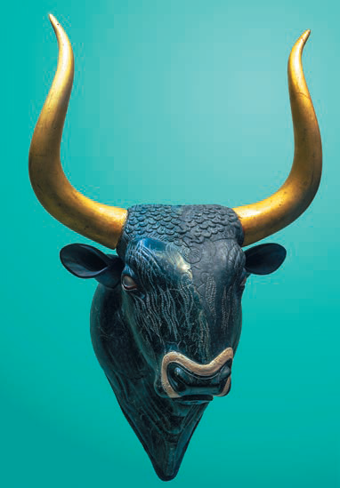
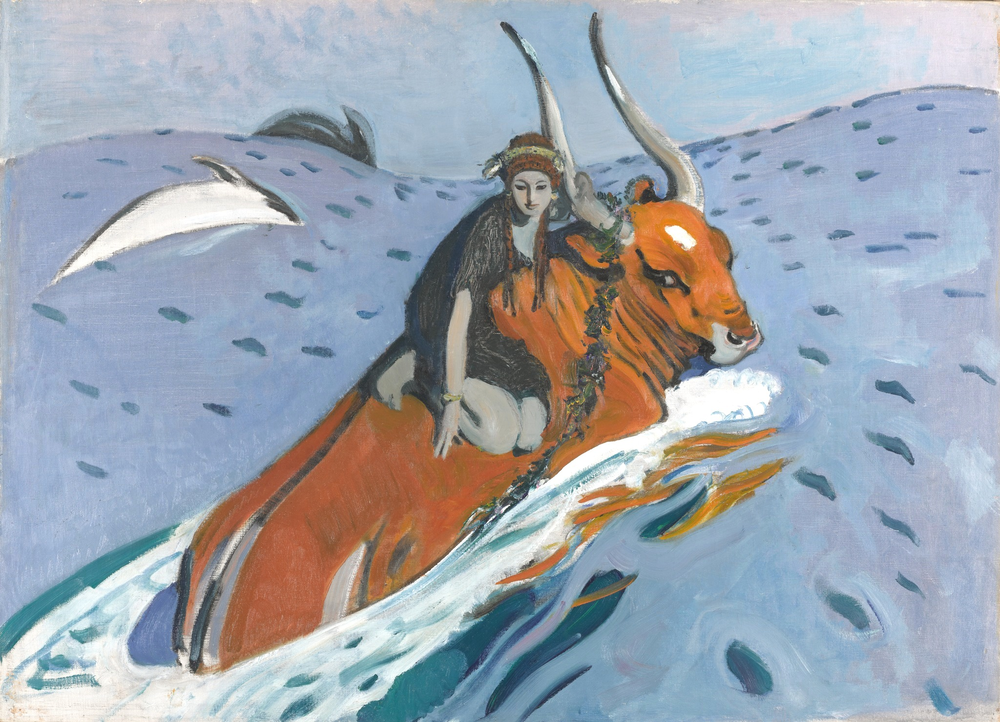
Los testimonios de la propia cultura son algo completamente distinto. Por ejemplo, en la cultura cretense está ausente todo signo de militarismo: escudos, espadas, armamento.17 Nada de punzante ni cortante, salvo objetos rituales como el labrys, el hacha bifaz para los sacrificios. ¿Puede ser que el mundo descubierto por Arthur Evans viviera al margen de la guerra? ¿Acaso los extraños y misteriosos conjuntos arquitectónicos de los laberintos de Creta, Cnosos, Festo, son lugares de misterios rituales y cultuales de una civilización otrora vasta y desconocida? Tal variante cabe suponerla.
El palacio-laberinto de Cnosos (como ya dijimos) es arquitectónicamente incomprensible por su nivel constructivo. Como se dice, hoy nada semejante sería posible construir. Pero toda arquitectura es siempre «labrys», doble sentido: simultaneidad de la imagen (el alma) y del nivel de la potencia técnica de la realización (el cuerpo). «Laberinto elemental, / bosque incomprensible, / abismo razonador del alma gótica». Estas palabras de O. Mandelstam sobre Notre-Dame son respuesta también a nuestra pregunta. «Abismo razonador». La racionalidad del proyecto arquitectónico y el abismo de la idea-imagen del laberinto: el abismo que nos separa de la técnica y de las imágenes de la construcción. Es al mismo tiempo sobre la tierra y bajo la tierra. Cuántos pisos bajo tierra, exactamente no lo sabemos. El plan del laberinto: la infinitud del camino del conocimiento y el «abismo».
Las excavaciones arqueológicas tampoco dan respuesta.
Y cómo estremece, entre todos los hallazgos arqueológicos, el sello de la Abeja, desplegada de dos alas sobre la flor de la pulmonaria.18 En la mitología antigua las abejas están uncidas al carro de Proserpina, señora del reino de los muertos, el reino de Hades.
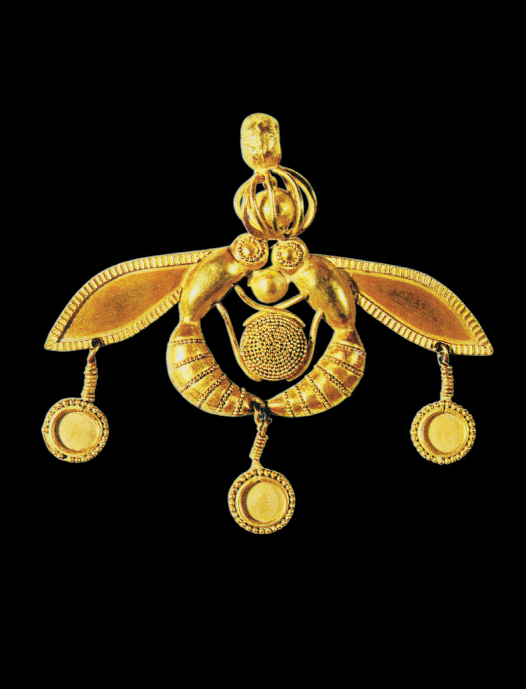
En la parábola bíblica de Sansón, en la boca del León muerto las abejas hicieron su prodigio de arquitectura del panal y lo llenaron de miel. Aquí el tema de la muerte y la vida («de lo muerto, lo viviente») está entretejido en el eterno dualismo de la muerte y la resurrección. La simetría heráldica de las alas de las abejas-sello mistéricas recuerda las dos hachas-segur, semejantes a alas de mariposa: el labrys. «Volando de la luz a la sombra»: de la hermosa iridiscencia del instante, de la vida que bebe el néctar de la flor, hacia las tinieblas de la crisálida-momia fajada.
Puede suponerse (¿por qué no?) que de todos los confines del mundo de entonces acudían pueblos, ya fuera al jardín paradisíaco, ya al reino de los muertos. Pueblos distintos: egipcios, habitantes de los Estados de Mesopotamia, sumerios, fenicios y también aquellos a quienes no conocemos y no nos arriesgamos a nombrar.
Los fenicios desempeñaban, al parecer, un gran papel en aquel mundo desaparecido. Según la mitología antigua, Europa es hija de un rey fenicio. Todo el mundo mediterráneo estaba en interacción e interconexión culturales y cultuales. Todos: egipcios, caldeos, sumerios, tenían su cosmogonía, sus mitos paralelos y coexistentes. Pero allí, en Creta, quizá convergían en un único misterio: el sacramento del paso por el paraíso y el infierno, la luz y las tinieblas, los dos grandes principios originarios que daban la renovación del renacer «de la vida desde el principio». Según la tradición fenicia del relato sobre el Caos primordial, de él procedió Mot. Mot es a la vez Muerte y Resurrección tras la muerte.19 Aquí, quizá, se esconde el sentido radical de la idea del Laberinto y de sus misterios.
No tocamos los vínculos que unían los cultos de Egipto y Creta: al Apis (el toro blanco), protector del Egipto Septentrional, y al Toro de Creta. La mitología antigua no queda confirmada por los datos de la arqueología cretense, como ya hemos dicho. La Antigüedad griega nació más tarde, pero en nuestra conciencia, en nuestra tradición, se unió a las ideas-imágenes del mundo pre-antiguo, cuyo nombre es Creta.
Entre la montaña de los pisos sobre la tierra y lo subterráneo, el sacrificio purificador del rito místico colectivo vino a ser el nexo de unión. En la fiesta-rito de la muerte y la resurrección, en el teatro-misterio, hay dos héroes: el Hombre y el Toro. Los fragmentos de fresco que escaparon a la corrupción pintan conmovedoras imágenes del juego con el toro. Los cuerpos tensos, de hombros anchos y cintura fina, de los participantes de los juegos de los antiguos misterios están pintados con virtuosismo. Las formas del arte de Creta son refinadas y caprichosas no solo en la pintura, sino también en los vasos rituales, en la escultura. El estilo cnosio o minoico acerca nuestra asociación artística al arte modernista europeo, precisamente a aquel tiempo en que Arthur Evans halló los tesoros de los laberintos.
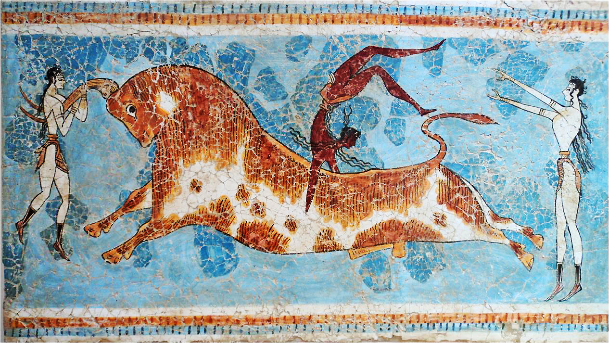
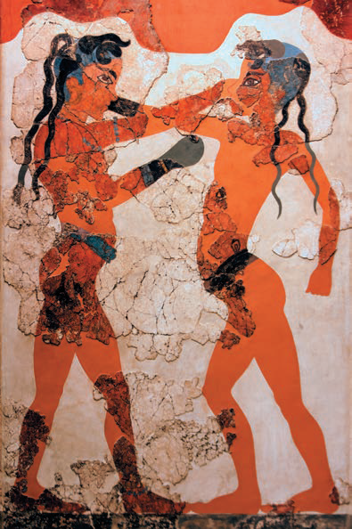
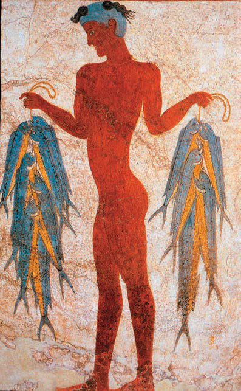
La clásica, impecable en su forma, pintura vascular griega —ánforas, hidrias, cráteras, cílices— presta sus superficies a los artistas. La cerámica de Creta, en cambio, como si adquiriera su forma bajo el empuje de hierbas flexibles; de pulpos adheridos a las paredes de los jarros; de flores que crecen caprichosamente en las paredes de las ánforas rituales. Su forma está subordinada al material, a la plástica del tema figurativo. Son asimétricas, algo abolladas. El torno cede ante la mano del escultor-ceramista, a su vez subordinado a la propia naturaleza. Los vasos de Creta están amoldados con las manos como una escultura. No tienen canon ni en la forma ni en el material. La vasija cerámica de los griegos está creada en el torno, perfecta en su forma, conforme a las reglas del orden. Es imposible unir con un relato lógico único el mundo desaparecido que dejó fragmentos. Caen fuera muchos de sus eslabones.
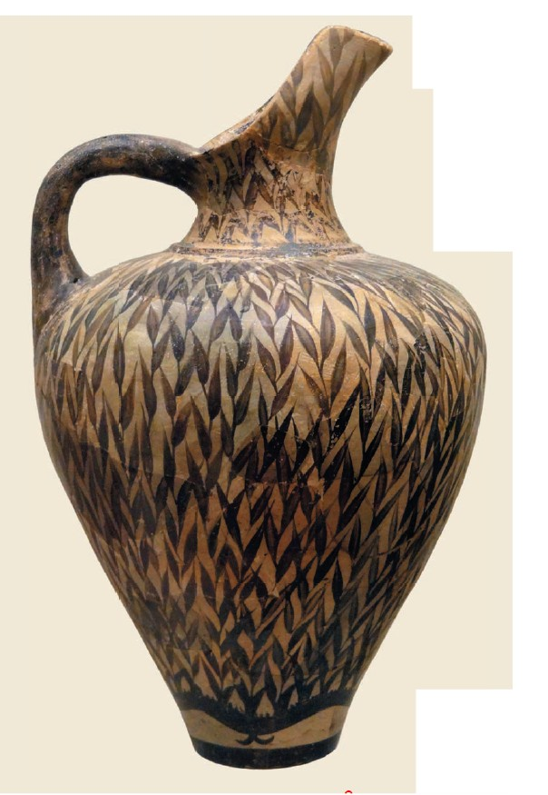
El arte de aquel mundo «otro», pre-griego, acaricia el ojo con el refinamiento de la pintura, con la tierna transparencia del color. Hace muchos milenios la paleta cromática del mundo entero era distinta de la actual. El mar, el cielo eran otros no solo por el color, sino energéticamente. Quizá nosotros no podríamos vivir en el incandescimiento energético de aquel tiempo. Los frescos, además de los temas de los juegos, representan delfines jugando y peces voladores, monos y unas flores jamás vistas, semejantes a enormes lirios, desaparecidas. El estilo de las pinturas combina la precisión documental de los objetos y plantas que nos son familiares con la absoluta fantasticidad. Pero también lo reconocible tiene otro sentido y otro significado.
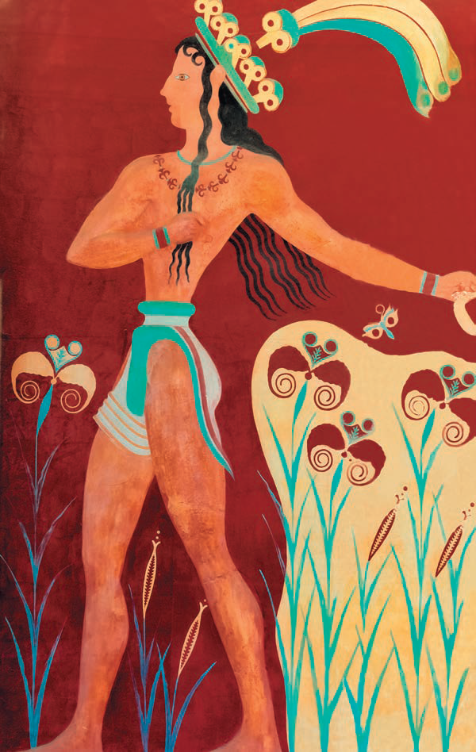
Las serenas imágenes «paradisíacas» de la pintura de las terrazas superiores del laberinto representan a los participantes de los misterios y a los espectadores, donde los espectadores son también participantes. No son espectadores casuales, sino iniciados en el acto. Mujeres jóvenes de peinados negro intenso, rizados con fuerza, madejas de cabello entrelazadas de perlas. Los bucles, serpenteando como culebrillas, corren por los cuellos, por los vestidos. Las manecillas marcan los tiempos de los ritmos rituales, y a nosotros nos parece que aplauden. Sus vestidos, que pueden contemplarse con especial claridad en las figurillas de las sacerdotisas-encantadoras de serpientes, tampoco tienen análogos ni en las modas egipcias ni en las antiguas. Las egipcias vestían vestidos-sarafán que ajustaban estrechamente el cuerpo. Los griegos vestían drapeados de caída libre: túnicas y peplos. Las cinturas de avispa de las cretenses, finas como las de los hombres, están fuertemente ceñidas por cinturones. Faldas de vuelos superpuestos, hasta el suelo, casacas ceñidas de mangas estrechas e, infaliblemente, el pecho desnudo. Imágenes que estremecen por su sensualidad, por su ineludible y fatal enigmaticidad.
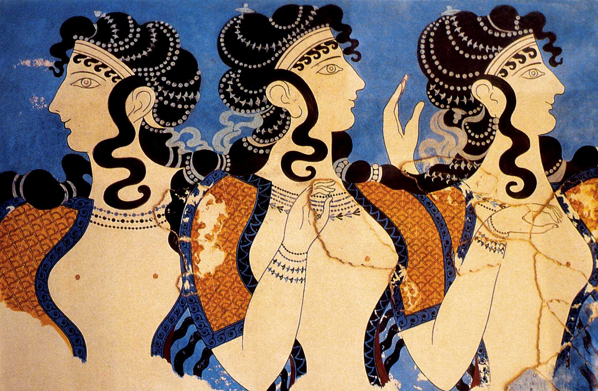
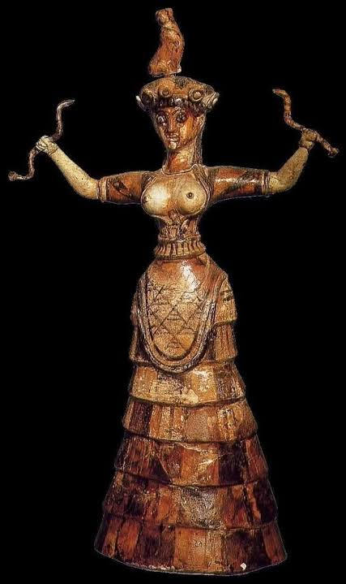
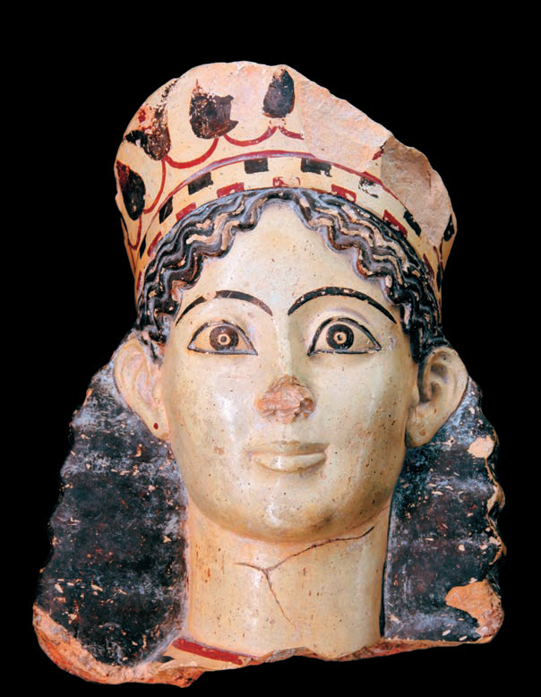
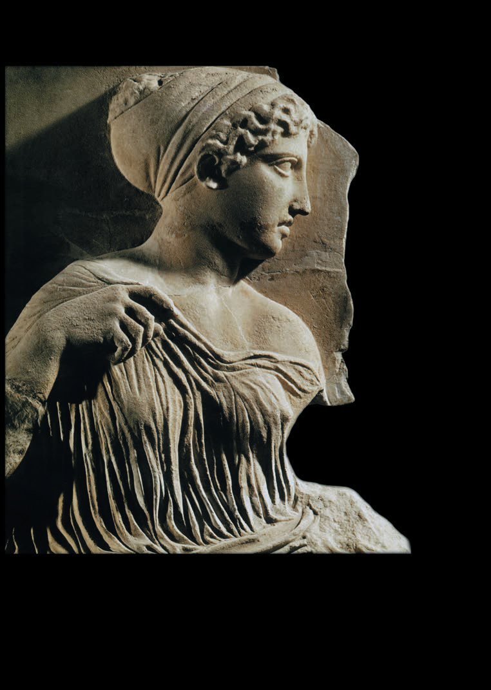
Plutarco cuenta que la madre de Alejandro Magno, Olimpia, fue traída de Creta.23 Una vez Filipo de Macedonia, al ver sus juegos con las serpientes, consideró que el lecho de Olimpia era visitado por los dioses, y la temía sobremanera. Alejandro ya antes de nacer era llamado héroe, es decir, hijo de una mujer mortal y de un dios.
Por cierto, quisiéramos señalar el gran papel de la mujer en el mundo que se nos apareció gracias al genio y la suerte de Evans. En el mundo ritual, festivo-trágico, la mujer-sacerdotisa, ministra de la diosa-madre, era sagrada.
Un fragmento de civilización desconocida, desprovisto de lengua escrita, de historia, de signos de guerra y, por fin, de sepulturas. En todo caso, cementerios momificados como los de Egipto, sepulturas coronadas por estelas y otros signos de enterramiento, evidentemente, no hay. «La cultura es la actitud ante la muerte», según la definición de Lev Nikoláievich Gumiliov.24 No hay cementerios. No hay rito funerario como el ritual que nos es habitual. ¿Quizá incineraban los restos, los guardaban en canopos de arcilla, los esparcían? ¿O acaso los cementerios estaban en pozos donde aún no se ha excavado? Pero que tras la «partida» seguía el «retorno» es indudable por todos los símbolos de la arquitectura y de los objetos conservados. Cementerios-sepulturas (evidentes) realmente no se han hallado.25 La actitud de los egipcios ante la muerte es una actitud ante la inmortalidad, en la potente solemnidad de las pirámides y en los ritos de momificación.
El tema de la «partida» en la antigua Creta está quizá vinculado con el descenso, el adentrarse en los pisos subterráneos del laberinto, y luego el «retorno» al mundo del día y de la noche. Lo que quedó plasmado en la monumental inmovilidad de las pirámides y las estelas, en los laberintos del vagar era acción. Y los «vagabundeos póstumos del alma», con el retorno subsiguiente, eran el Gran Ritual, el «Gran Juego». Con todo, esto no es más que una suposición, como esta pregunta: ¿fragmento de qué civilización fue la antigua Creta?
Odiseo, errante en busca del camino de regreso a casa, no descubrió en Creta nada particularmente notable, salvo a Nausícaa26, que lavaba la ropa y jugaba a la pelota, y, además, la empobrecida morada de los reyes.
Para la invasión aquea, y luego la doria, Creta como cultura viva ya no existía. Ya en el siglo XII Creta «se disolvió», se hundió en el fondo de la memoria. Los laberintos eran solo la imagen, asombro de la imaginación, de un mundo abandonado y de un espejismo. Su alma viva, tras consumar el último salto mortal sobre el lomo del Toro, abandonó el cuerpo del misterio, y este se desmoronó.
Creta fue parte del «mundo pre-antiguo» que ya para Solón era leyenda, como sabemos por los «Diálogos» de Platón. En el diálogo «Timeo», un anciano sacerdote de Sais explica a Solón: «¡Ah, Solón, Solón! Vosotros, los helenos, permanecéis siempre niños, y no hay anciano entre los helenos». — «¿Por qué dices eso?», preguntó Solón. «Todos sois jóvenes de entendimiento —respondió aquel—, pues vuestras mentes no conservan en sí ninguna tradición transmitida desde antiguo de generación en generación, ni ninguna doctrina envejecida por el tiempo. La razón es esta: ya ha habido y habrá múltiples y diversos casos de perecimiento de los hombres, y los más terribles, por causa del fuego y del agua…» Y luego el sacerdote egipcio, cuya memoria, a diferencia de la del heleno, guarda las tradiciones, contó a Solón la historia de la Atlántida, situada «más allá de las Columnas de Hércules». Pero después, cuando llegó el plazo de terremotos e inundaciones jamás vistos, la tierra abierta en canal engulló también a la Atlántida. «Desapareció, hundiéndose en el abismo» (Platón, Diálogos, Moscú, 2004, pp. 404-406).
Aquella civilización desconocida, de la que Creta de los «laberintos» era parte, y quizá también Egipto, podía llamarse Atlántida: la isla de más allá de las «Columnas de Hércules». Y que no sepamos o no veamos algo no significa en modo alguno que eso no exista. «Y no hacen falta pruebas de ninguna clase», como decía uno de los personajes de Bulgákov.
Hay todavía hoy en la tierra un lugar donde se cultiva el juego con el Toro-Muerte-Destino, donde hay faldas de vuelos superpuestos, y casacas estrechitas, y cabellos levantados, negros como ala de cuervo, que serpentean cual culebras por las mejillas, donde hay cinturas finas y espaldas tensas y arqueadas de los hombres, y tocados caprichosos sobre la cabeza. Ese país es España. Es ampliamente sabido que los omnipresentes mercaderes-piratas fenicios establecieron sus colonias en el sureste de España «in illo tempore». Y aunque los raíles han sido desmontados y no hay camino directo de Creta a España, la tradición, eso sí, ha permanecido. Única en su género, cambiada con el curso de los siglos, pero semejante en esencia e incluso en los elementos de la forma. Hay otro testimonio sobre las huellas de la Atlántida en España. Citamos el texto de Platón: «Al gemelo (se habla de uno de los herederos del rey de los Atlantes), nacido tras él, que recibió en suerte los confines de la isla desde las Columnas de Hércules (Gibraltar) hasta la actual región gaditana, le fue dado el nombre de Gadir»27 (Gades, la actual Cádiz). Sea como fuere, las semillas esparcidas por distintos lados desde la gran catástrofe brotaron precisamente en el sur de los Pirineos. Si recordamos que en el norte de la Península Ibérica se hallan las cuevas de Altamira y otras misteriosas huellas del mundo desaparecido, digámoslo así: España esconde en su historia muchos secretos. Nos provocan y se nos escabullen.
No hay duda de que la corrida es una tradición nacional, larga. Cambió en el camino, pero quedó en la sangre y en la memoria cultural del pueblo antiguo.
¡El culto al toro y a la corrida como misterio del amor y de la muerte! Lo que asombra en las tiendas de recuerdos del sur de España son las vasijas de barro semejantes a las cretenses. Asimétricas, jarras con los picos levantados en alto, ornato convencional del mar y los peces. Irritan la memoria con la asociación, con la remitencia a Creta.
Quizá durante largos siglos el juego con los toros fue una diversión tradicional aldeana que había perdido el vínculo con el antiguo misterio. Para Roma, en cambio, la provincia pirenaica, llamada Iberia, era importante estratégicamente, pero aburrida para los soldados ávidos de espectáculos. Y en el siglo I d. C. los romanos construyeron en el lugarejo de Ronda la primera arena28 conforme a todas las reglas de la arquitectura del anfiteatro. Basta imaginarlo: la arena sigue intacta hasta hoy, conocida en la España actual como la primera arena de la corrida. Y hasta el día de hoy es popular y no ha cambiado su destino. Quizá entonces el juego aldeano festivo de «escapar del toro», que se conserva todavía en ciertos lugares, adquirió cierta forma de espectáculo público. La corrida moderna: espectáculo masivo, de arena, cautivante, con un estricto reglamento de rito, acción y reglas. Y no inocente, no sin sangre, lo que era especialmente afín al corazón de los aficionados a los combates de gladiadores. Pero lo que más convence no es Ronda ni las faldas de las andaluzas. Lo que más convence es Picasso. «El poeta siempre tiene razón», y la memoria de los genios es más convincente que los hechos.
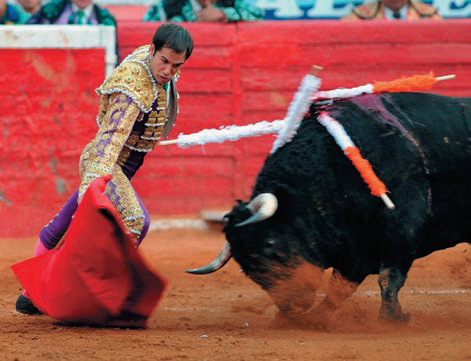
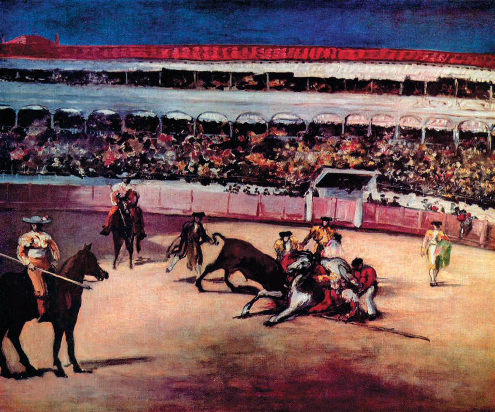
Al tema de la memoria de los genios conviene volver todavía. En cuanto a Picasso, que fue español entre los españoles, la vida en Francia nada cambió en este sentido. Al contrario: lo reforzó. Para la obra de Picasso ambos temas «cretenses», la «Tauromaquia» y la «Corrida», son suyos, casi biográficos.
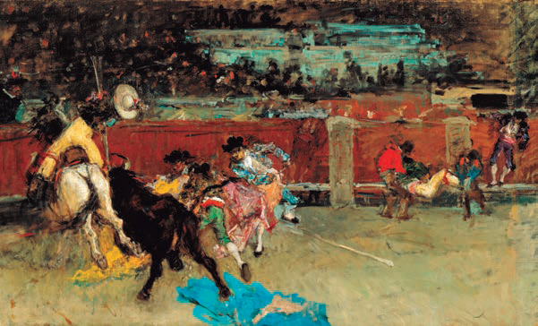
Para Goya la corrida es un tema nacional, como el fútbol. Picasso conoce su origen totémico, antiguo.
Picasso tiene una serie de platos cerámicos que recuerdan por su forma fuentes de pescado o anfiteatros elipsoidales en miniatura. Su pintura: un original cuento histórico que se desarrolla gradualmente sobre la corrida, desde el momento de su surgimiento hasta las tribunas repletas, aplaudiendo y vociferantes, de nuestro día.
La primera fuente es idealmente blanca, sin una sola mancha de color. Solo en el fondo del plato, con el reverso del pincel u otro estilete, está impresa la gema del toro, que recuerda las pinturas rupestres. El negativo, la matriz del sueño. Es aquello de lo que hablan los versos de Mandelstam: «Y, tal vez, a los labios ya asomó naciendo el susurro / y en la sin-arboreidad giraban las hojas». La idea antes de la encarnación. Para el español Picasso es el Toro. Para quienes poblaban antaño la isla de Creta (o llegaban expresamente allí), el Toro era lo mismo que para Picasso. En otro nivel de conciencia, en otra civilización, en otras formas de lengua, etc., etc., pero con el mismo invariable «fondo» de la conciencia. Hoy es deporte y maestría de reglas estrictísimas. Pero lo principal: el tema del combate ctónico, el triunfo de la voluntad sobre la desmemoria ctónica. La encarnación.
En los platos siguientes va creciendo gradualmente la historia del nacimiento de la corrida. El toro se vuelve manifiesto, coloreado, encarnado. Convencionalmente, con insinuación de las tribunas de Cnosos, la imagen de las gentes. Surge el tema del combate singular, que se convierte gradualmente en dramaturgia. Y los espectadores son cada vez más, más y más participantes de la corrida. Las tribunas ocupan todos los bordes de los platos; el fondo sigue consagrado al misterio, ya moderno. El virtuosismo en el dominio de la pintura y de la composición espacial es tal que de plato a plato cambia la sensación del espacio. De incoloro, casi monocromo, derramándose por los bordes, adquiere el color del espectáculo festivo y se parece cada vez más a la elipse de las tribunas, a la arquitectura clásica de la arena. Para Picasso la corrida no era solo un deporte nacional. El ritual trágico-festivo de los juegos con el Toro: el inconsciente colectivo de los habitantes del Mediterráneo, reflejado en la mitología de la cultura minoica del laberinto. Durante la corrida, puede suponerse, el tiempo deja de escindirse, enroscándose en un único ovillo de la historia. O hipnosis masiva del sueño histórico.
Hay una fotografía más elocuente que las palabras. Picasso con cabeza de toro. La enorme máscara de toro, puesta en la cabeza. El artista del siglo XX se transforma en el Minotauro de lo inmemorial.
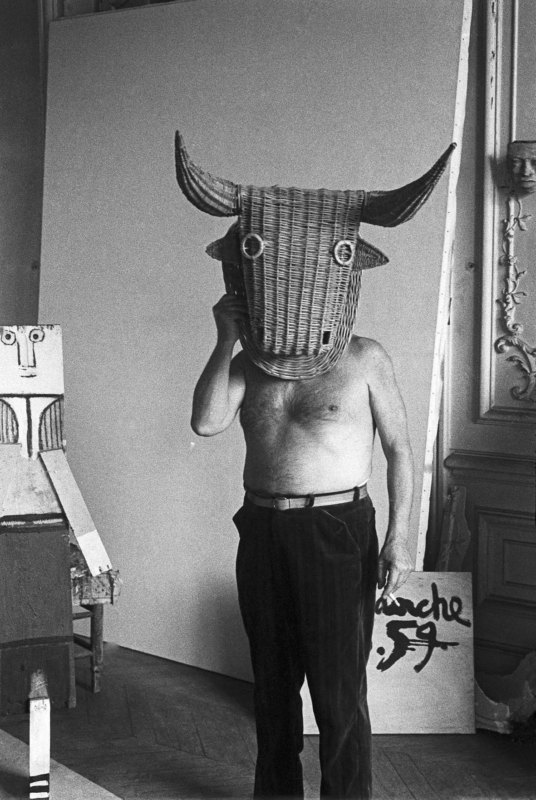
A partir de 1933 Picasso realizó tres series de aguafuertes de la Minotauromaquia29, hizo la portada para una de las mejores revistas de arte, «Minotaure», cerrando el tema con el célebre «Guernica». Sin contar los lienzos con cabezas de Toro, los ya mencionados platos, las obras pictóricas y gráficas dedicadas a la corrida.
La imagen del Toro en la obra de Picasso puede definirse como de triple esencia. El toro: el doble interno del artista. El Minotauro: las fotografías de Picasso con la máscara. El audaz y temerario Pablo identifica sus instintos con los instintos del toro, reconociendo sobre sí el poder del arquetipo totémico. Más de 40 aguafuertes y dibujos hizo el maestro en distintos tiempos, investigando los instintos, la pasión, el arrebato vinculado a la mujer-Europa y a nombres harto concretos de las esposas de su biografía. El Minotauro como alter ego del propio artista.
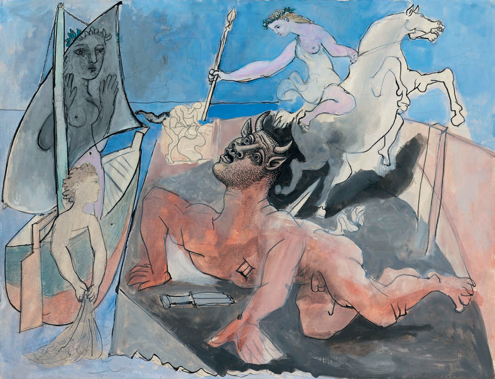
El tema del Toro y de la Muerte: el Minotauro muriendo en la arena. Los Minotauros ciegos que se alejan en la infinitud de las tinieblas. Los Minotauros ciegos (abismados en las tinieblas) componen dos series de aguafuertes. La genial «Minotauromaquia», donde a la fuerza oscura, ciega y destructora solo puede detenerla una niña con una vela en la mano y un ramo de flores.
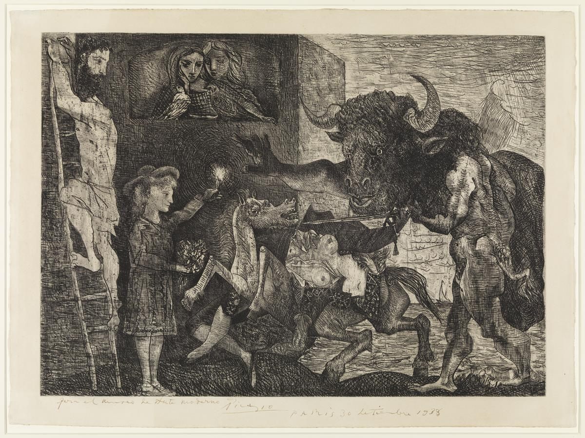
Y por fin, el Toro de la furia tododestructora: metáfora global del retorno del mundo al Caos. Todos los esfuerzos de Zeus-Toro por encarnar el mundo, venciendo al Caos, resultan vanos. El odio ciego de los Minotauros lo devuelve de nuevo al no-ser. La oposición Amor-Muerte, tema rector de la cultura europea, se aniquila en la Nada. La prememoria reflejada de Pablo le sugirió este final apenas tras el ametrallamiento y bombardeo de Guernica en 193630. Sabía mirar sin miedo hacia dentro tanto del propio abismo como de aquella catástrofe que se avecina si el niño con la vela y el ramo de flores no detiene al monstruo. Profetiza la muerte del mundo por la ceguera, la informeidad, el hombre que pierde la razón.
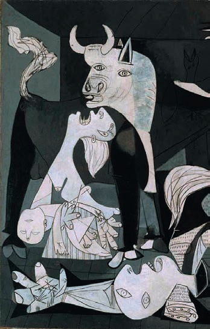
Volvamos, sin embargo, a Creta. Creta compartió el destino de muchos países mediterráneos. Por turno lo ocuparon griegos, romanos, Bizancio, turcos, la República de Venecia. Otra vez turcos.31 La guerra de independencia y la unión con Grecia son ya historia del siglo XX. Por confesión, Creta es cristiano-ortodoxa a través de Bizancio. Pero a los turistas que hoy llegan a Creta (gracias a los cuales vive en gran parte la isla) solo les interesa el santuario que quedó sobre la superficie de la historia del mundo, disuelta por el océano. El laberinto con las prodigiosas piezas del museo de Heraclión. ¿Sabremos alguna vez algo de aquel fundamento sobre el que reposaba el hoy ruinoso mundo del mito medio ciego, que ha perdido el habla? Quizá no. El misterio: he ahí el estímulo de todo interés imperecedero por la historia, el arte, el genio.
Notas del editor
1. Verso del poema «Cicerón» (1830) de Fiódor Tiútchev: «Он их высоких зрелищ зритель». De él sale el título del capítulo, «Высокие зрелища».
2. La frase es de Alfred North Whitehead (Process and Reality, 1929): la tradición filosófica europea «consiste en una serie de notas a pie de página a Platón».
3. La Biblioteca se atribuía a Apolodoro de Atenas, no de Alejandría; hoy se considera obra de un autor anónimo del siglo I o II d. C. («pseudo-Apolodoro»). Además, no empieza con el Caos, sino directamente con Urano, como muestra la cita siguiente.
4. Son los primeros versos de «La Géante» (Las flores del mal): «Du temps que la Nature en sa verve puissante / Concevait chaque jour des enfants monstrueux…». La versión española traduce la traducción rusa, no el original francés.
5. En Hesíodo (Teogonía, 176–200) Crono actúa solo, con la hoz que le da Gea. Las erinias nacen de la sangre que cae sobre la tierra, y de los genitales arrojados al mar nace Afrodita.
6. El cuadro de Goya es Saturno devorando a un hijo. Saturno es el nombre romano de Crono, no de Urano, y en la pintura devora a un solo hijo.
7. Es una variante poco común. En la versión más extendida, Crono devora también a Poseidón. Pausanias (VIII, 8, 2) cuenta que Rea lo escondió entre los corderos y dio a Crono un potro para que lo tragara.
8. No he encontrado ninguna fuente antigua para esta afirmación. Parece una asociación de la autora.
9. La autora confunde dos guerras distintas. La lucha contra los titanes es la Titanomaquia; la Gigantomaquia es la guerra de los dioses contra los gigantes, y es la que representa el Altar de Pérgamo. El friso mide unos 113 metros. El altar se atribuye a Eumenes II (hacia 180–160 a. C.); la victoria sobre los gálatas fue de su padre, Atalo I.
10. El título es El nacimiento de la tragedia en el espíritu de la música (1872).
11. Según el mito, Dédalo huyó a Sicilia, a la corte del rey Cócalo, y allí terminó sus días. En Atenas había vivido antes de ir a Creta.
12. El «laberinto» egipcio que describe Heródoto (II, 148) estaba en Hawara, en el Fayum, junto a la pirámide de Amenemhat III (dinastía XII), no cerca de Tebas. La autora confunde a Amenemhat III con Amenhotep III, a quien los griegos llamaban Memnón por sus colosos tebanos.
13. Los micénicos (aqueos) dominaban Cnosos ya hacia 1450 a. C. La destrucción definitiva del palacio se fecha hacia 1375–1350 a. C., no en el siglo XII.
14. Solo en parte. La lineal B, hallada en abundancia en Cnosos, la descifró Michael Ventris en 1952: es griego micénico. Siguen sin descifrar la lineal A (minoica) y el disco de Festo. Por eso tampoco es exacto hablar más adelante de una civilización «desprovista de lengua escrita».
15. El que mata al Minotauro es Teseo, no Jasón. La propia autora nombra a Teseo pocas líneas después.
16. Hay representaciones anteriores: la metopa del templo Y de Selinunte (siglo VI a. C., Museo de Palermo) y numerosas pinturas de vasos de los siglos VII y VI a. C.
17. La arqueología ha encontrado armas minoicas: las espadas ceremoniales de Malia, puñales y cascos. El arte minoico apenas representa la guerra, y eso es lo que sostiene la tesis de una Creta pacífica. Hoy esa tesis se considera exagerada.
18. La pieza de la lámina es el colgante de oro de las abejas de Malia (hacia 1800 a. C.): dos abejas afrontadas que sostienen una gota de miel o un panal. No es un sello. Tampoco he encontrado ninguna fuente antigua que unza abejas al carro de Proserpina.
19. En la cosmogonía fenicia transmitida por Filón de Biblos, Mot es un limo primordial nacido del Caos y del viento. En los textos de Ugarit, Mot es el dios de la muerte; el que muere y resucita es su adversario, Baal.
20. El «joven pescador» y los «jóvenes púgiles» no proceden de Creta, sino de Akrotiri, en la isla de Tera (Santorini). Ambos frescos están en el Museo Arqueológico Nacional de Atenas, aunque el índice sitúa a los púgiles en Heraclión.
21. El libro no aclara qué obra es. En la geografía griega no existe una «isla de Tebos». La reproducción debe identificarse con la lámina 9 del PDF.
22. La losa del friso oriental con Poseidón, Apolo y Ártemis está en el Museo de la Acrópolis, no en el Museo Arqueológico Nacional. La lámina no guarda relación directa con el texto del capítulo.
23. Olimpia era una princesa molosa de Epiro, no cretense. Plutarco (Alejandro, 2) sí cuenta que Filipo vio una serpiente tendida junto a ella y que desde entonces la evitaba; relaciona los ritos de las serpientes con los cultos órficos y dionisíacos de Tracia y del Epiro.
24. No he encontrado esta definición en la obra de Gumiliov.
25. Sí se han hallado. Están las tumbas de tholos de la Mesará, la necrópolis de Fourni en Arjanes, la Tumba-Templo y la tumba real de Isópata en Cnosos, y numerosos sarcófagos de arcilla (lárnakes).
26. Nausícaa vive en Esqueria, la isla de los feacios (Odisea, VI), no en Creta. En la Odisea Creta aparece sobre todo en los relatos inventados por Odiseo, y la describe como populosa, con noventa ciudades (XIX, 172–174).
27. El pasaje es del Critias (114b), no del Timeo.
28. La plaza de toros de Ronda (Real Maestranza) se construyó entre 1779 y 1785; no es romana. En la Hispania romana hubo anfiteatros, como los de Itálica y Mérida, pero no están en el origen de la corrida moderna.
29. La Minotauromaquia es un único aguafuerte de 1935. Los minotauros de 1933–1934, incluido el del Minotauro ciego, forman parte de la Suite Vollard. La portada del primer número de Minotaure es de 1933.
30. El bombardeo de Guernica fue el 26 de abril de 1937.
31. El orden correcto es otro: Roma, Bizancio, el emirato árabe (824–961), de nuevo Bizancio, Venecia (1211–1669) y los otomanos (1669–1898). Después vino el Estado autónomo de Creta, y la unión con Grecia en 1913. No hubo un dominio turco antes del veneciano.